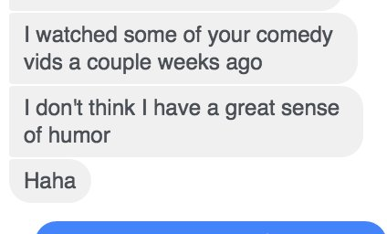

These are all the tweets and replies that @RadishHarmers made on 2016-10-15:
Id:
787113956347260928
Timestamp:
2016-10-15 at 2:12:45
Id:
787141075668312064
Timestamp:
2016-10-15 at 4:0:31
In reply to user:
@portmanteauwar
In reply to tweet ID:
787140483403354113
Id:
787143018901934082
Timestamp:
2016-10-15 at 4:8:14
In reply to user:
@portmanteauwar
In reply to tweet ID:
787142828296200193
Id:
787150453670682624
Timestamp:
2016-10-15 at 4:37:47
Containing photo:

Id:
787156957484322816
Timestamp:
2016-10-15 at 5:3:37
Id:
787158682484117504
Timestamp:
2016-10-15 at 5:10:29
In reply to user:
@quasicoherence
In reply to tweet ID:
787157312016351232
Id:
787159054942543872
Timestamp:
2016-10-15 at 5:11:58
In reply to user:
@RadishHarmers
In reply to tweet ID:
787156957484322816
Id:
787187254686908416
Timestamp:
2016-10-15 at 7:4:1
Id:
787240001687793665
Timestamp:
2016-10-15 at 10:33:37
Id:
787241179368665088
Timestamp:
2016-10-15 at 10:38:18